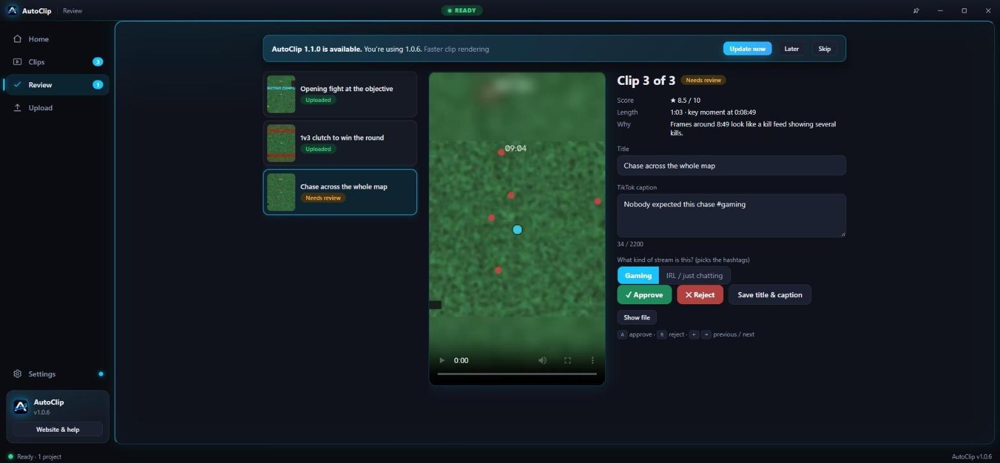
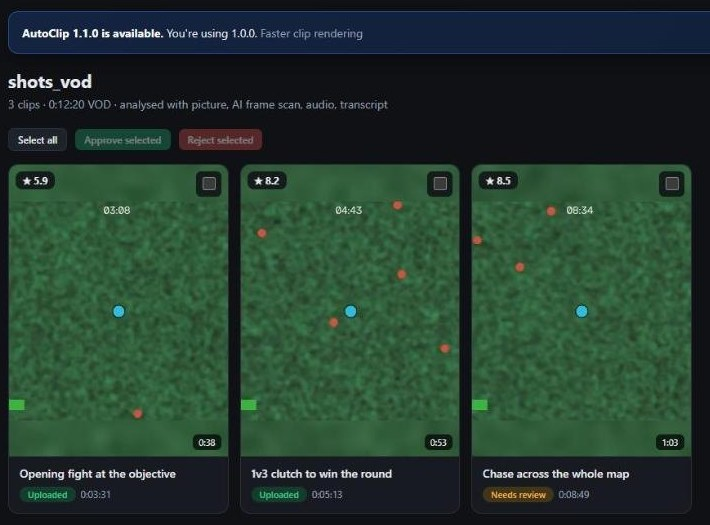

Turn your VODs into clips,
automatically.
AutoClip watches and listens to your whole stream, finds the moments worth posting, cuts them into ready-to-share vertical clips, and lets you review everything before a single one goes live.
Version 1.0.7 · Windows 10 / 11 (64-bit) · 167 MB

From a long stream to a short clip in four steps
No editing software, no scrubbing through hours of footage.
Add your VOD
Paste a Twitch or Kick link, or pick a video file from your PC. That's it.
AI analyses it
AutoClip listens, reads the transcript and watches the picture across the whole stream to find real moments, not just loud ones.
You review the clips
Watch every clip. Approve, reject, rename it, and edit the caption. Nothing leaves your PC without your say-so.
Upload to TikTok
Tick the clips you want and press Upload. They go to your TikTok account through TikTok's official API.
It understands what actually happened
A shout isn't a highlight. AutoClip checks that something really happened on screen right before a reaction, includes the setup that makes the moment make sense, and cuts at the end of sentences, never in the middle of one.
- Picture, audio, speech and chat combined
- Clips start and end at natural pauses
- Every finished clip is checked before you see it


Several accounts, one click, never twice
Connect one or more TikTok accounts, tick your approved clips, and upload. The queue shows every clip as Uploading, Uploaded or Failed with a plain-English reason, and AutoClip refuses to post the same video to the same account twice.
- Sign in on tiktok.com. AutoClip never sees your password
- Official TikTok API only
- Drafts to your inbox, or direct posting once TikTok approves your app
Everything between "VOD" and "posted"
AI VOD analysis
Scans the entire stream, hours long, in a fraction of the time it would take to watch it.
Automatic transcription
Whisper turns what was said into a timestamped transcript, so funny conversations count as much as clutch plays.
GPU acceleration
Uses your NVIDIA GPU for transcription: about 3.6× faster in our tests, and fast enough for the most accurate model.
Smart clip detection
Cross-checks audio, speech, chat and picture, and pulls each clip back to the event that caused the reaction.
Video analysis
Looks at motion, HUD activity, flashes and dead footage, and optionally shows real frames to an AI model.
Clip review
Watch, approve, reject, rename and caption every clip. Keyboard shortcuts included.
TikTok uploading
Uploads through TikTok's official Content Posting API, with a queue and clear errors.
Multiple accounts
Connect several TikTok accounts and choose where each batch of clips goes.
Automatic updates
New versions are checked, downloaded and verified in the background, and only installed when AutoClip is idle.
Good to know
Is AutoClip free?
Yes. AutoClip itself is free to download and use. Optional extras you choose to add (a Claude API key for AI frame review, for example) are billed by those providers, never by us.
Does it upload anything without asking?
No. Clips are only uploaded after you approve them and press Upload. You can review, rename and caption every clip first.
Where do my videos go?
Nowhere. Analysis runs on your PC. If you add an optional Claude API key, a few still frames and transcript excerpts of candidate clips are sent to Anthropic for review, and nothing else leaves your computer. See the Privacy Policy.
Do I need a powerful PC or a GPU?
No. AutoClip works on any modern Windows 10/11 PC. An NVIDIA GPU makes transcription several times faster and is a one-click optional setup.
How do I connect TikTok?
AutoClip uses TikTok's official API, which needs a free TikTok developer app. The documentation walks through it step by step, and each person connects their own account on tiktok.com.
How do updates work?
AutoClip checks for new versions in the background, downloads and verifies them, and asks you before installing. It never updates while it's busy with a VOD, and your settings, accounts and clips are kept.
Stop scrubbing through VODs.
Download AutoClip, point it at your last stream, and review your best moments in minutes.
Version 1.0.7 · Windows 10 / 11 · Other versions & requirements